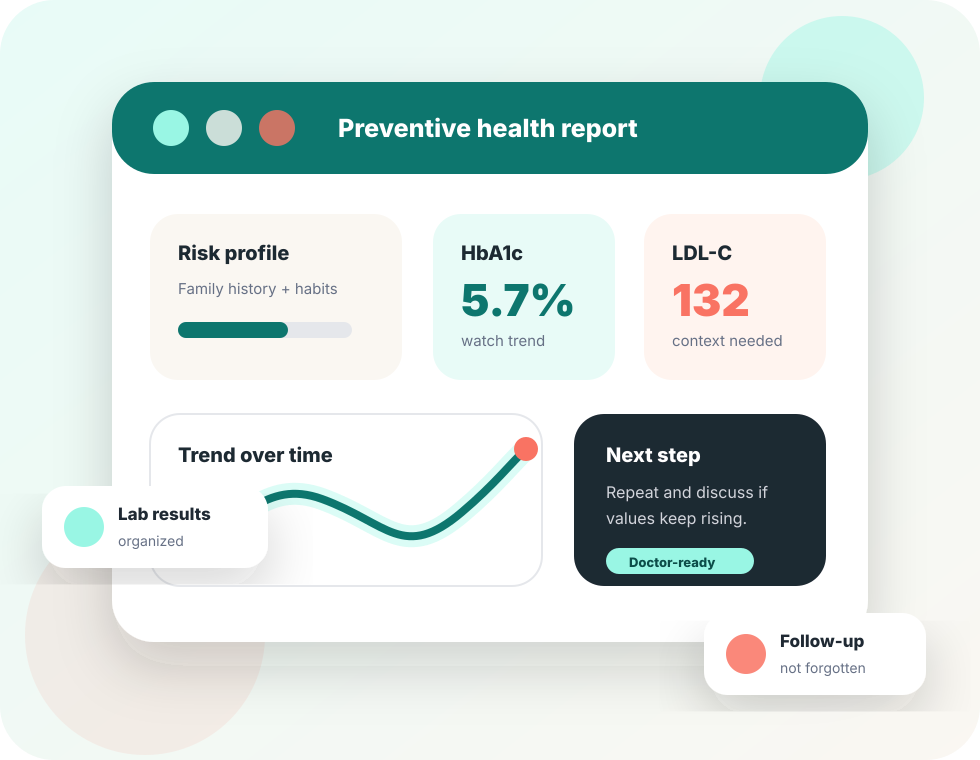
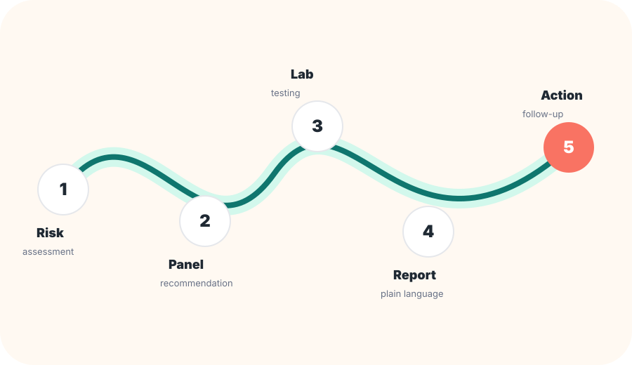

Preventive health platform · pre-MVP/MVP
Health before symptoms.
ANTES Health helps people and families understand what preventive lab tests they need, track health trends over time, and take responsible action before disease progresses.
Risk-based screeningClear reportsFollow-up over time

The gap
Testing is not enough when people leave without context.
Many people only check their health when symptoms appear. But risks such as prediabetes, hypertension, high cholesterol, anemia, and cardiometabolic disease can develop silently for years.
ANTES Health turns lab results into a preventive journey: what to measure, what changed, what to watch, and what to do next.
How it works
A simple path from risk to action.
Instead of a generic lab package, ANTES starts with the person and ends with clear next steps.

Personalized panel
Lab testing
Clear report
Follow-up
Explore
Learn the idea without endless scrolling.
Each page focuses on one part of ANTES Health.
Our StoryWhy ANTES exists and why “before” matters.
Mission & VisionOur values and long-term direction.
Our ApproachThe science-backed prevention journey.
MVP PilotHow we will validate the first version.
AwardsMilestones and early credibility.
Join WaitlistUsers, partners, labs, clinicians, investors.
Build with us